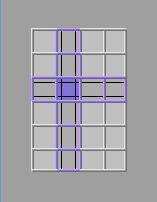

Making Your Own Card File
In this example, a simple standalone card file application is
designed. Ultimately, the card file will contain:
- Three text boxes with labels: Name, Phone, and Email
- An Add button to add the information in the text boxes to the
scrolling list
- A Find button to display the name specified in the Name text field
- A labeled scrolling list text box to display names and phone numbers
- A Delete button to remove the selected name from the card file
When all the components have been added to the layout, your card file
should look like this:

Select the Right Container
Since the application being built is meant to run outside of a
browser, the main container should be a frame instead of a panel.
 To change container
type from Panel (the default) to Frame:
To change container
type from Panel (the default) to Frame:
- Choose GUI -> Set Window Type.
- In the Main Container dialog box, select the untitled panel and
click Frame.
- Click OK to establish the change.
Modify the Gridbag
The gridbag layout panel should have a 6 (rows) by 4 (columns) grid.

To add a row, click on a corner square and press the Up Arrow or
Down Arrow key.
To delete a column, click on a corner square and press the
Delete key.
For detailed information on changing the grid, see Create a Layout Grid.
Add the Components
You will need to add the following components:
- Text Label (3)
- Single-line TextField (3)
- Text Button (3)
- List (1)
To add a component:
- Click on a component in the GUI builder palette.
- Click on a cell in the gridbag.
For details on adding, modifying, and deleting components from the
gridbag, see Add Components to the
Layout Grid.
Once all the components have been added, save the file.
Label Text Fields and Buttons
The next step in creating the card file is to label the text fields and
buttons.
To add labels to the buttons:
- Select a button component.
- Open the attribute editor by clicking on its button in the main toolbar.
- Apply the label for the button by typing its name in the text box.
Although Gui builder provides a unique name for each component
added to the layout, the names are generic and indistinguishable (for
example, button1, button2, ...). You should assign unique
IDs to the components to ensure that behavior is added to
the correct component. For example, the following component IDs were
made for the card file:
- Replaced the textfield1 ID with nameTextfield.
- Replaced the textfield2 ID with phoneTextfield.
- Replaced the textfield3 ID with emailTextfield.
- Replaced the button1 ID with addButton.
- Replaced the button2 ID with findButton.
- Replaced the list1 ID with namesList.
- Replaced the button3 ID with deleteButton.
You will see these component IDs in the Adding Behavior to the Card
File section.
Preview the Card File
Preview the card file GUI by choosing Preview from the Mode
list. The Mode list is located to the right of the palette.
Generate Java Code
Once the card file layout is complete, you need to generate the Java
source file for the layout:
- Select the frame by clicking in the area around the GUI layout in
the layout window.
- Choose GUI -> Save Generate GUI File.
- Check your project directory for a
.gui file.
Now you are ready to add behavior to the components.
 See also:
See also:
- Adding Behavior to the Card File
- Adding a Third Party Component
- Laying Out the Interface
- Modifying Components in the Grid
- Positioning Components in
Cells
- Resizing the Window